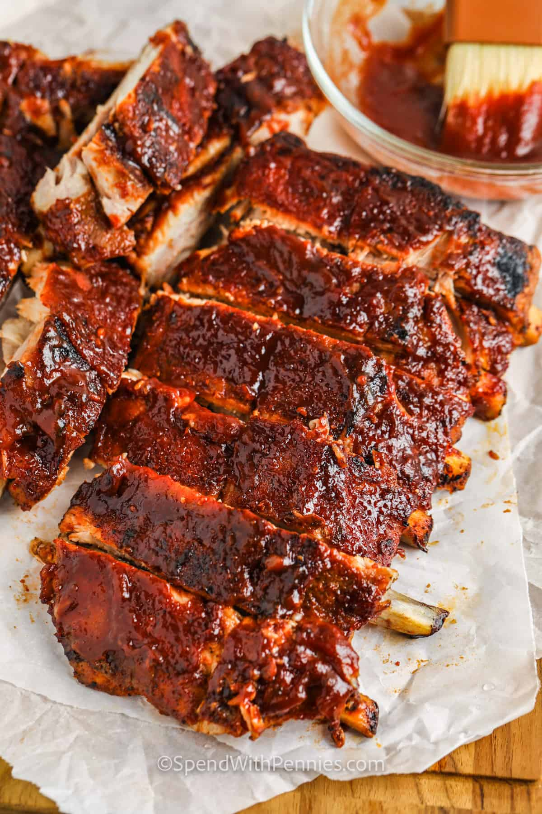

Homemade rib marinade is used in this barbecue ribs recipe that's easier than it looks. I usually cook the ribs the day before and grill them for a quick dinner the next night. The sauce is much better after it is cooked; it is not a dipping sauce.
Home